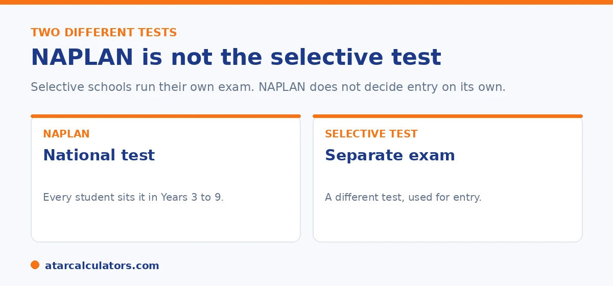

Here is the short version. NAPLAN does not decide selective school entry. Selective high schools and Opportunity Class places are offered based on their own entry tests, not on NAPLAN results. NAPLAN can be a useful signal of how your child is tracking, but it is not the test that wins a place. This guide explains how the two fit together and what actually counts.
Selective school places are competitive, so it is natural to wonder whether every test counts, including NAPLAN. The short answer is reassuring. NAPLAN is not the test that decides entry.
Selective entry runs on its own separate exam. NAPLAN sits alongside it as a general check of literacy and numeracy. Below is how each one works, and where to look next if a selective place is your goal.
Key takeaways
- NAPLAN does not decide selective school or Opportunity Class entry.
- Selective places are offered based on a separate entry test.
- NAPLAN is a useful signal of how your child is tracking, nothing more.
- A strong NAPLAN result is encouraging, but it does not win a place.
- The entry test is what counts, so that is where to focus preparation.
- Each state runs its own selective process and its own test.
Does NAPLAN decide entry? No
Let us clear up the main worry first. NAPLAN does not decide whether your child gets a selective school place or an Opportunity Class place. Those places are offered based on a separate entry test, run by the education authority in your state.

So a single NAPLAN result, good or bad, will not make or break a selective application. The selective test is its own exam, sat at its own time, and that is the one that counts for entry.
NAPLAN and the selective test are different
It helps to see the two clearly. NAPLAN is a national test that every student sits in Years 3, 5, 7, and 9. It checks literacy and numeracy across the country. Its job is to show how children are tracking, not to sort them into schools.
The selective entry test is a separate exam, sat by children who apply for a selective place. It is designed to find students who would do well in a selective setting. The two tests have different purposes, different content, and different timing.
How NAPLAN can still help
NAPLAN is not useless for selective hopefuls. It can be a helpful early signal. If your child is reaching Strong or Exceeding across areas, that is a good sign they have the skills a selective test will ask for.
If NAPLAN shows gaps, that is useful too. It tells you where to focus before the entry test. Think of NAPLAN as a check up, and the selective test as the real exam. To see how your child is tracking, use our NAPLAN score calculator.
Want to see how your child's NAPLAN result is tracking?
Open the NAPLAN score calculator →What actually counts for selective entry
Since the entry test is what decides places, that is where preparation should go. Each state runs its own process. In New South Wales, for example, there is a selective high school test and a separate Opportunity Class test for younger students.
To plan ahead, look at the test for your state and year. Our guides can help: the NSW selective test calculator and the Opportunity Class calculator show how scores and entry work. Focus your child's preparation on the entry test, not on NAPLAN.
It is worth being clear about the relationship between NAPLAN and selective entry. This is because the two are easy to conflate and doing so misdirects preparation. NAPLAN is a national check of literacy and numeracy sat by all students at set year levels. It does not, in itself, determine selective or Opportunity Class placement. That is decided by a separate entrance test run by the state. So a strong NAPLAN result is reassuring evidence that your child has solid foundations. And a weaker one flags areas to support. But neither is the thing that wins a selective place. That said, the two are not unrelated. The entrance tests draw on the same underlying skills NAPLAN measures, reading comprehension and numerical reasoning among them, plus thinking skills and, for high school entry, writing. So the work that builds genuine literacy and numeracy helps both. That is why steady learning is never wasted. The practical implication is to keep them in their proper roles. Use NAPLAN as a diagnostic of your child's foundations. If selective entry is a goal, direct specific preparation at the actual entrance test for your state and year. This is because that is what decides placement. Preparing "for NAPLAN" in the hope it secures a selective place is aiming at the wrong target. Preparing for the entrance test. Letting good everyday learning lift both, is the approach that works.
A note to keep things calm
It is easy to pile pressure on every test when a selective place is the goal. Try not to. NAPLAN is a snapshot, not a gatekeeper. One result will not decide your child's future or their selective application.
Use NAPLAN to spot strengths and gaps, support your child steadily at home, and keep the focus on the actual entry test when the time comes. A calm, well prepared child does better than a stressed one.
Where to focus for selective entry
If selective entry is your goal, focus on the actual placement test, not NAPLAN. The selective test has its own sections, its own format, and its own preparation. NAPLAN does not feed into it.
That said, a strong NAPLAN can be a gentle signal that your child copes well with this kind of assessment. Use it as reassurance, not as part of the selective score, because it is not.
Two separate assessments
NAPLAN and the selective test are run by different bodies at different times. NAPLAN happens in March at set year levels. The NSW selective test is a separate exam that Year 6 students sit for Year 7 entry.
They do not overlap, and a result in one has no bearing on the other. So prepare for each on its own terms. Do not assume a strong NAPLAN secures a selective place, or that a weaker one rules it out.
Common questions
Does NAPLAN affect selective school entry?
No. Selective school places are offered based on a separate entry test, not on NAPLAN. A NAPLAN result will not make or break a selective application.
Does NAPLAN affect Opportunity Class entry?
No. Opportunity Class places are decided by their own entry test. NAPLAN is not used to offer Opportunity Class places.
Is NAPLAN useful for selective hopefuls at all?
Yes, as a signal. If your child is reaching Strong or Exceeding, that is a good sign. If it shows gaps, it tells you where to focus before the entry test.
What decides selective school entry?
The selective entry test decides places. Each state runs its own process and its own test. That exam, not NAPLAN, is what counts.
Should we prepare for NAPLAN to help with selective?
Focus preparation on the actual selective entry test, since that is what decides places. NAPLAN checks skills your child is already learning, so heavy NAPLAN drilling is not the priority.
Does a high NAPLAN score guarantee a selective place?
No. A high NAPLAN result is encouraging, but it does not guarantee anything. The selective test is separate and is what offers places.
Where do I find the selective test for my state?
Each state runs its own selective process. Our NSW selective and Opportunity Class guides explain how scores and entry work for those tests.
See how your child is tracking
Enter a NAPLAN score and year level to see the level and where it sits. Free, and no signup.
Open the NAPLAN score calculator →Related guides
This guide is general information for parents, not formal advice. Selective entry processes differ by state and can change, so always check your state education authority and the National Assessment Program (NAP) site. Reviewed by the ATARCalculators Editorial Team.